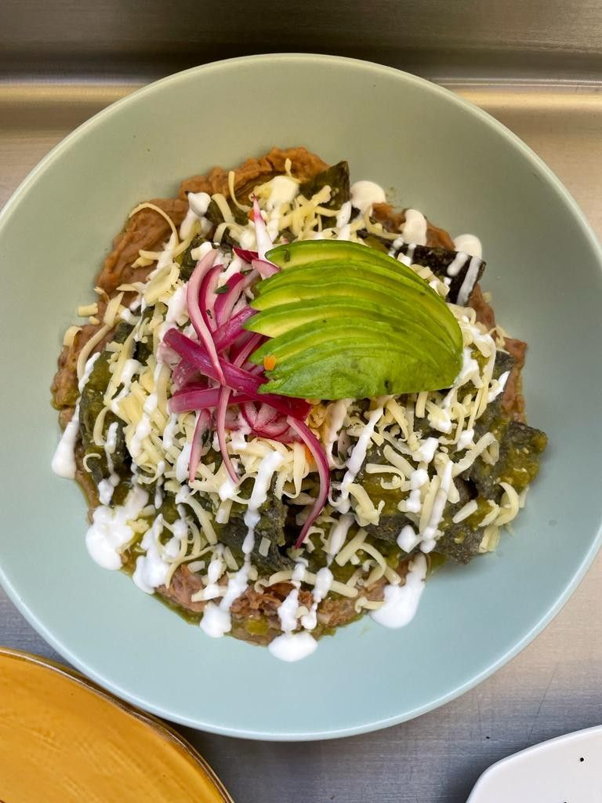

Mis preferencias generales
Mis preferencias son:
- Comida favorita: Los chilaquiles o cualquier cosa con chocolate
- Color favorito: Los colores neutros pero más cafés
- Materia favorita: Todo lo que tenga números o pensamiento lógico-matemático
- Deporte favorito: Me gusta salir a correr y ejercicios de fuerza
